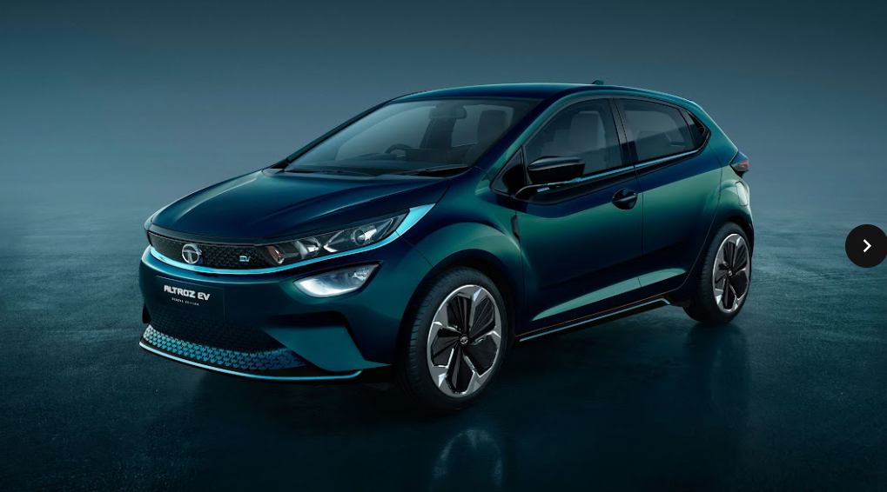

This is a description of Tata Altroz.

The Tata Altroz is a subcompact car/supermini manufactured by Tata Motors. The Altroz was revealed at the 89th Geneva International Motor Show alongside the new Buzzard, Buzzard Sport, and H2X compact SUV concept. It was launched to the Indian market on 22 January 2020. The name "Altroz" was inspired by name of bird species, Albatross.
...